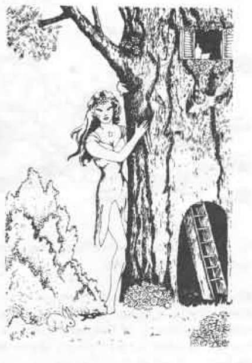

树精 · Dryad
 |
|
这些美丽迷人的树灵只出现在极为僻静之处，并且只生活在橡树附近，离不开与自己融为一体的那棵树超过 36 寸。树精羞怯而不喜争斗。除非遭到突袭，否则她可以步入树中，从闯入者看不到的一侧离开，再以任意门传送回自己的树。树精的树只以体型较大为特征，并不散发魔法灵光。
若受到严重威胁，或遇到魅力值达到 16 以上的男性，树精会施展强大的魅惑人类法术，每日最多三次，每个近战轮至多一次；目标的豁免检定承受 −3 惩罚。被树精带走的人有 50% 概率永不归来；若归来，则会在 1–4 年后出现。树精会说自己的语言、精灵语、皮克精语、精类语，也能与植物交谈。若对方谨慎接近，她们或许愿意帮助其本人或队伍。树精完全了解自己栖居的森林。